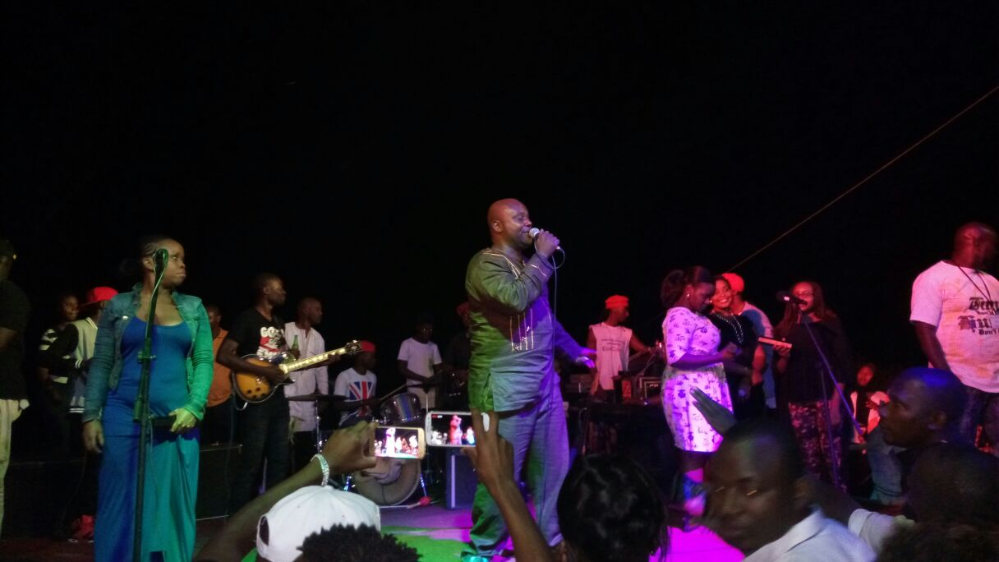

Bujumbura a eu une bonne dose de musique de Kidumu ce week-end. L’artiste burundais qu’on ne présente plus, qui évolue à Nairobi a bien servi ses fans bujumburais mais aussi de Bubanza.
Trois concerts en deux jours, il y a de quoi emprunter la tournure d’un de ces fans: “Ce week-end est vraiment ‘kidumifié’ ” . Le samedi, 03 septembre 2016, Kidumu a offert un concert sur le terrain tempête sis au quartier Kabondo. Une foule immense a répondu massivement. Le public attendait de pied ferme leur artiste qui n’avait pas livré de concert sur le sol burundais depuis un bon bout de temps. Accompagné de son groupe d’instrumentistes et son choeur de trois filles, le niveau de performance était à saluer, avec une sonorisation impeccable.
 Le dimanche, pas tout blanc
Le dimanche, pas tout blancLa journée promettait d’être chargé pour Kidumu et son groupe. Deux concerts dans une demi-journée. Un concert de 14h à 17h à Muzinda (dans la province Bubanza) et un autre à Bujumbura, sur le bord du Tanganyika à 18h. Les écho de Muzinda sonne positive, mais à Kibenga, la déception et la satisfaction se partagent les deux faces du médaillon.
Il est 17h30 à Lacosta Beach, les personnes se bousculent pour acheter leur tickets d’entrée. Deux dames qui vendent les droits d’entrée sont débordées. Elles se font aider par trois jeunes hommes, et trois policiers essayent d’interpeller les fans qui on t hâtes d’entrer de former deux lignes pour être bien servis. Mais l’ordre reste à désirer. 18h va sonner, et tout le monde veut entrer, sans parler de ceux qui viennent en voiture qui sont aussi pressés.
A l’intérieur, la foule est déjà pas moindre. La scène est occupée par différents artistes comme Happy Famba, Black J, Mr Champagne et autres. L’horloge affiche 18h, l’attente est intense: Où est Kidumu? Où est Peace and Love? Le public s’impatiente. “La ponctualité n’est pas leur rayon, je sais que Kidumu va monter sur scène vers 20h”, dit une fan déçue et avec un air mécontent.
Enfin, le groupe Peace and Love s’affiche sur scène, mais il est 18h40. La voix de Vivi, leader du groupe s’entend dans les haut-parleurs, mais il n’est pas sur scène. Les instrumentistes lancent leur musique live, mais la sonorisation semble ne pas donner sa meilleure de soi. Quelque chose cloche, parce que des coupures de la continuité du son interviennent à chaque fois. Un ingénieur du son qui assiste au concert me dit: “…il leur faut un compresseur pour avoir un bon son, sinon ça va continuer ainsi”. Vivi Peace monte sur scène, 19h passé quelques minutes, le public se reveille. Cinq chansons et Vivi quitte un moment la scène pour revenir en smoking. “Ntabundi buhinga” chanson en vogue est jouée, la foule est aux anges. Le public chante en duo avec Peace and Love. Le show devrait être de cette couleur du début jusqu’à la fin. Les caprice de la sonorisation persiste.
Finalement, Kidumu est là. Il est 20h12. La dame avait raison. Il débute sa performance mais il sens le problème de la sonorisation. Face à face du public, il chante, mais le son se coupe d temps en temps, Kidumu est gêné et lance un regard à chaque fois derrière l’ingénieur de son. Rien à faire, la sono ne répond pas à ses attentes. Enervé, l’artiste qui, au début, a demandé des micros supplémentaires pour son choeur trio, stoppe ses instrumentistes. “Je ne peux pas continuer comme ceci. J’arrête ma performance” ,lance Kidumu. “Je chante, la voix ne parvient pas au public, que voulez-vous que je fasse? Cette sonorisation est faite pour les Karaoké” , ajoute l’artiste. Le public réclame et lui suggère de continuer dans ces conditions inconfortables. Ainsi , Kidumu va continuer malgré lui.